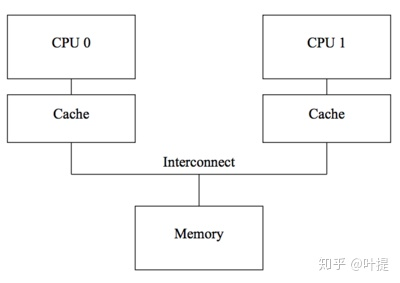
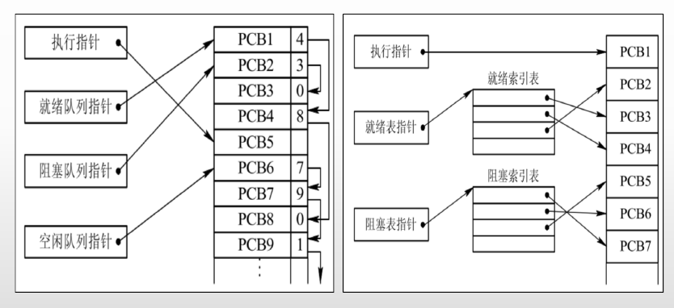
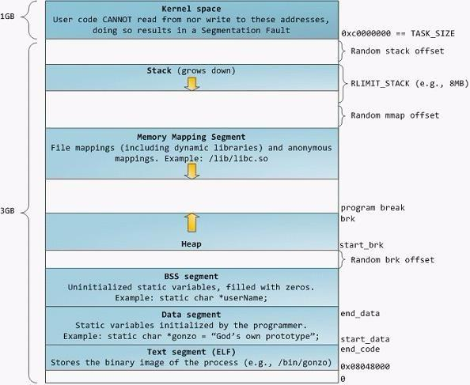
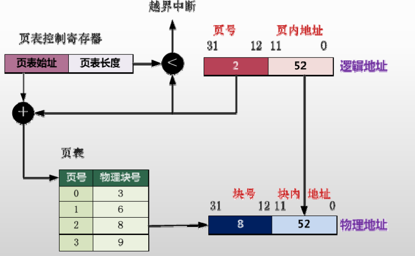
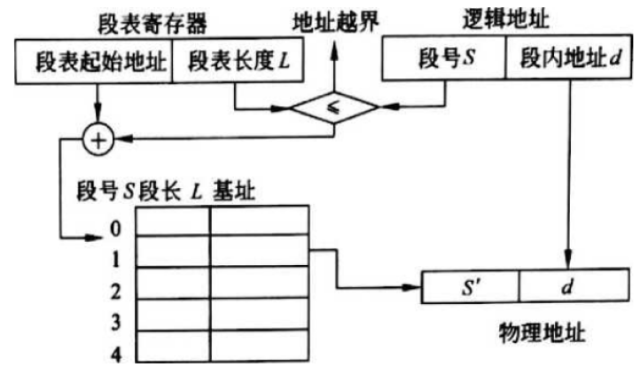
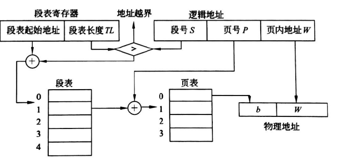
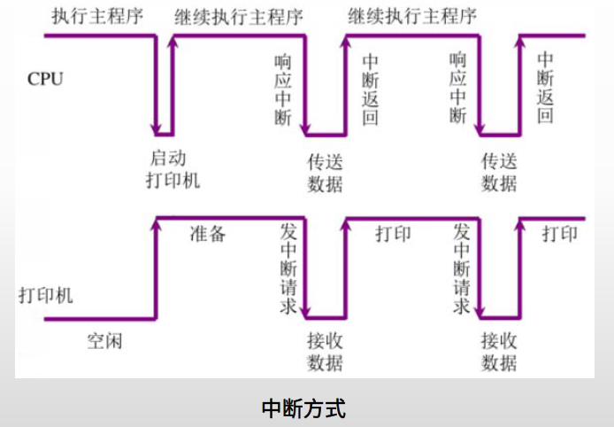
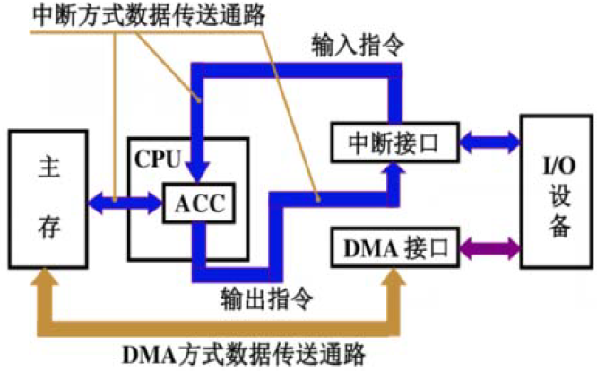
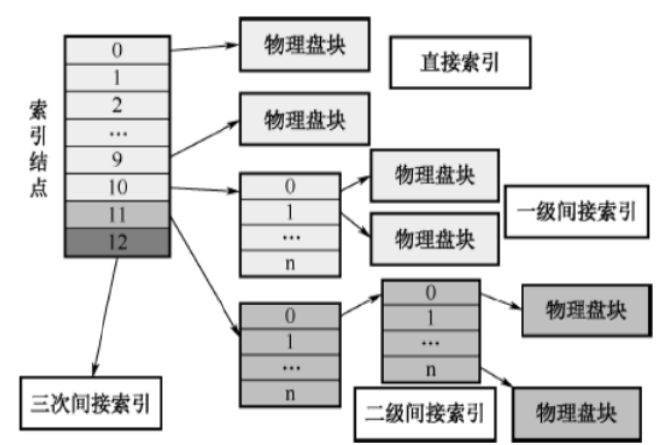
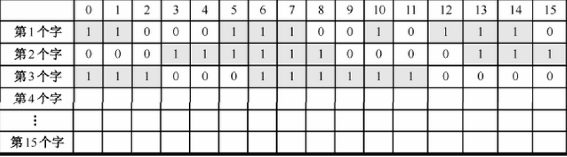

操作系统
CPU 内存/缓存一致性
cpu cache
数据以"cache lines"的形式在cpus的cache和内存之间传输，cache line是定长的block，大小通常在16～256bytes。
- cache miss 时会加载数据，一般采用组相联模式；
- 写需要保证所有cpu之间的一致性，在某个cpu写数据之前需要将其它cpu cache中的相应数据移除或者"invalidated"；

MESI
cache一致性协议通过管理cache-line的状态来防止不一致或者数据丢失，以下介绍只关注四种状态的MESI缓存一致性协议。
MESI协议，每个cache line上用2位来维护状态值"tag"，四种状态分别为：
- Modified：处于modified状态的cache line可以认为是被这个cpu所拥有，相应的内存确保不会出现在其它cpu的cache中。这个cache拥有这份数据的最新副本，因此也负责将它写回内存或者移交给其它cache。
- Exclusive：与modified相似，区别是这种状态下相应cpu还未修改cache line的这份数据，内存中的这份数据是最新的，在cache丢弃该数据前，缓存不用负责将数据写回或者移交给其它cache。
- Shared：处于shared状态的cache line可能被复制到至少一个其它的cpu cache中，因此在该cpu存储该line时，需要先询问其它cpu，与exclusive一样，相应的内存中的值是最新的，在cache丢弃该数据前，不用负责将数据写回或者移交给其它cache。
- Invalid：处于invalid状态的line是空的，没有数据，当新的数据进入cache时，将会优先被放入invalid状态的cache line中，替代其它状态的line可能引起将来的cache miss。
内存重排（由Store Buffer、CPU乱序、编译器重排等造成）带来的内存一致性memory consistency问题，MESI协议也是处理不了的。
- X86 上的LOCK前缀指令：原子性 + 禁止前后指令的重排序
内存重排
内存重排是指内存读写指令的重排，分为软件层面的编译器重排 和硬件层面的CPU重排 。
CPU重排：
- CPU指令重排：并行执行、延迟执行等；
- 缓存读写重排：先进行缓存读写操作，而不是直接对内存进行读写；
内存屏障类型
从上面来看，barrier 有四种:
- LoadLoad 阻止不相关的 Load 操作发生重排
- LoadStore 阻止 Store 被重排到 Load 之前
- StoreLoad 阻止 Load 被重排到 Store 之前
- StoreStore 阻止 Store 被重排到 Store 之前
CPU 内存一致性模型
目前有多种内存一致性模型：
- 顺序存储模型（sequential consistency model）
- 完全存储定序（total store order）
- 部分存储定序（part store order）
- 宽松存储模型（relax memory order）
Memory Order
C/C++ 中的 memory order 。
Making Sense of Acquire-Release Semantics | Dave Kilian's Blog
进程
三态模型：运行态、就绪态、阻塞态
进程的组成部分：程序、数据集合、PCB（进程控制块）
- PCB是种数据结构，是进程存在的唯一标识；
PCB的组织方式：
- 线性方式：所有PCB无论状态，连续存放在内存区域（线性表组织），每次查找扫描全表；
- 链接方式：按照进程的状态，将进程的PCB组织成队列，形成就绪、阻塞、运行队列（队列头指针）等；
- 索引方式：按照进程状态，建立就绪、阻塞、运行索引表等；

进程空间
虚拟内存机制：每个进程都逻辑上独占拥有全部的内存。
- 内存分配是分配虚拟内存给进程，当进程真正访问某一虚拟内存地址时，操作系统通过触发缺页中断，在物理内存上分配一段相应的空间再与之建立映射关系，虚拟内存地址会被自动转换变成有效物理内存地址，便可以进行数据的存储与访问；

-
64位地址的虚拟内存空间为256TB ( 2^48 )：目前的x86-64架构CPU都遵循AMD的Canonical form， 即只有虚拟地址的最低48位才会在地址转换时被使用，且任何虚拟地址的48位至63位必须与47位一致(sign extension)。
-
内核空间占一半（同样是高地址区域），普通进程使用另外一半。
- 使用40位来表示物理地址空间，可以通过
cat /proc/cpuinfo来查看；
Kernel space：操作系统内核地址空间；
- 每个进程的内核虚拟地址空间都是映射到相同的真实物理地址；
- 内核虚拟地址空间总是存放在虚拟内存的地址最高处。
Stack：栈空间。
- Random stack offset（栈随机偏移）：因为内存布局按照严格的规则摆放，因此很容易被恶意访问，通过加入随机偏移，使的每个进程的栈空间起始位置都稍有不同，使的被确定栈空间起始位置具有一定难度，防止被恶意访问。
Heap与Memory Mapping Segment：堆与内存映射段都属于堆空间
- 堆负责小额内存的管理，内存映射段负责大额内存的管理，方便的存储数据并且减少动态分配内存时系统的开销；
Text segment：代码段。这一块区域是用来存放进程代码；
Data segment：数据段。存放全局数据与静态数据；
BBS segment：保存的是全局/静态未初始化数据
死锁
两个或多个任务（线程）形成循环等待各自的共享资源释放，形成了死锁。
Coffman条件：死锁的充要条件
- 互斥：资源不可共享；
- 占有并等待条件：一个任务占有某个互斥资源同时且请求另一个互斥资源，且等待时不会释放任何资源；
- 不可剥夺：资源只能被那些持有它们的任务释放；
- 循环等待：拥有资源和申请资源形成了环状的循环。
解决死锁的策略：
- 死锁预防：破坏死锁条件中的任一个；
- 死锁避免：申请资源时判断是否会发生死锁，如银行家算法；
- 死锁检测：判断当前是否处于死锁，如果是则进死锁解除；
- 死锁解除：与死锁检测配合使用，剥夺进程的资源；
一般来说，通过预防就可以避免死锁，比如多资源申请的顺序要一致，且最先申请的资源最后释放。
活锁
系统有两个任务，因对方的行为而改变自己的状态，则出现了活锁。最终是它们陷入状态变更的循环而无法继续向下执行。
通过对多个资源的同顺序申请，可以预防活锁。
寻址
虚拟地址(逻辑地址)
所有现代操作系统都使用虚拟内存，使用虚拟的地址取代物理地址，这样做的好处是：
-
一个以上的虚拟地址可以指向同一个物理内存地址；
-
虚拟内存空间可大于实际可用的物理地址；
利用第一条特性可以把内核空间地址和用户空间的虚拟地址映射到同一个物理地址，这样DMA就可以填充对内核和用户空间进程同时可见的缓冲区。
地址重定位
将程序的虚拟地址（逻辑地址）转为内存的真实地址（物理地址）的过程，由单独的硬件处理。
- 静态重定位：
- 绝对地址（物理地址） = 相对地址（逻辑地址） + 程序存放的内存起始地址
- 程序运行前确定映射关系，程序装入后不能移动，占用连续的内存空间；
- 动态重定位：
- 绝对地址（物理地址）= 逻辑地址寄存器的值（VR）+ 重定位寄存器的值（BR）
- 程序占用的内存空间可动态变化，不要求连续的内存空间，便于多个进程共享代码；
存储管理
分区管理
把主存的用户区划分为若干个区域（连续），每个区域分配给用户作业使用，并限定他们只能在自己的区域中运行。
- 固定分区：每个分区用来装入一个作业；
- 可变分区：进程装入内存时，根据进程的大小动态地建立分区，系统分区的大小和数目是可变的（空闲分区会合并）；
- 首次适应算法：第一个区域能够满足程序的空间需求；
- 最佳适应算法：最小剩余的区域能够满足程序的空间需求；
- 最差适应算法：最大剩余的区域能够满足程序的空间需求；
- 可重定位分区：
- 程序使用的空间（连续）可以整体移动，让使用的分区集中，进一步减少内存碎片；
案例：伙伴系统（buddy system）：内存是以2的幂次个字节大小的空闲块为分配单位
分页管理
页：将进程的地址空间划分为若干个大小相等的区域。
页框：将主存空间也划分跟页大小相等的若干个物理块，也称为块。
逻辑地址：页号+页内地址；
物理地址：页框号（物理块号）+块内地址；
通过页表记录 页号 -> 页框号，页内地址等于块内地址。

分段管理
为每个段分配一个连续的区域（各个段的长度可以不一样），进程中的各个段可以离散地分配到主存的不同分段中。
逻辑地址：段号+段内地址；
物理地址：段基址+段内地址；
通过段表记录 段号 -> 段基址，段内地址一样。

段页式管理
将主存划分成大小相等的存储块（页框），将用户程序按程序逻辑关系分为若干段，将每个段划分为若干页，以页框为单位离散分配。
逻辑地址：段号 + 段内页号 + 页内地址
物理地址：段基址 + 页框号 + 页内地址

虚拟存储
当主存空间不能满足作业要求时，作业无法装入主存执行。
如果一个作业只部分装入主存便可开始启动运行，其余部分暂时留在磁盘上，在需要时再装入主存，这样可以有效地利用主存空间。
从用户角度看，该系统所具有的主存容量将比实际主存容量大得多，人们把这样的存储器称为虚拟存储器。
- 根据不同的管理方式分为：请求分页、请求分段、请求段页式
页面淘汰
请求分页管理中，淘汰页面的算法：
- 状态位在内存的页面才可以被淘汰；
- 根据访问位（0未访问，1访问），修改位（0未修改，1修改）进行淘汰：
- 按照 00 -> 01 -> 10 -> 11 的顺序进行淘汰；
设备管理
程序控制：CPU与设备串行工作
- 无条件传送：IO端总是准备好，CPU需要时，随时使用IO端口；
- 程序查询：CPU轮询IO端是否准备好，再进行发送数据；
中断：
- 某个进程要启动某个设备时，CPU就向相应的设备控制器发出一条设备I/O启动指令，然后CPU又返回做原来的工作；
- 设备准备好时，可以发送中断请求，CPU响应中断请求发送数据；
- CPU与I/O设备可以并行工作（即设备准备时，CPU可以继续执行其它程序）。

DMA：
- 通过DMA控制器直接进行批量数据交换，除了在数据传输开始和结束时，整个过程无须CPU的干预；

文件存储管理
索引视图

位视图
该方法是在外存上建立一张位示图（Bitmap），记录文件存储器的使用情况。每一位仅对应文件存储器上的一个物理块，取值0 和1 分别表示空闲和占用。

内核态和用户态
内核态：控制计算机的硬件资源，并提供上层应用程序运行的环境。比如socket I/O操作或者文件的读写操作等
用户态：上层应用程序的活动空间，应用程序的执行必须依托于内核提供的资源。
系统调用：为了使上层应用能够访问到这些资源，内核为上层应用提供访问的接口。
Intel X86 CPU 有四种不同执行级别0到3，Linux用0和3分别表示内核态和用户态。
缓冲区
- 用户缓冲区的目的是为了减少系统调用次数，从而降低操作系统在用户态与核心态切换所耗费的时间；
- 比如 Java 中的 BufferedReader，用户空间的缓存；
- 内核缓冲区，是为了在OS级别，提高磁盘IO效率，优化磁盘写操作；
- 读写文件时的内存缓冲区，等到一定时间或数据规模后，再写入磁盘。
I/O
同步、异步、阻塞、非阻塞
-
同步：不管是BIO/NIO/IO多路复用，从内核缓存写入用户缓存一定是由用户线程自行读取数据，处理数据
-
异步：数据是内核写入的，并放在了用户线程指定的缓存区，写入完毕后通知用户线程
- 阻塞：数据从网口写到内核,如果没写好,线程就一直在等待
- 非阻塞：数据从网口写到内核,用一个线程轮询的去查看所有的数据是否准备好(I/O多路复用,监听多个socket)
IO分类
- BIO:同步阻塞IO,一个客户端连接，对应一个服务端线程
- BIO还有一种变种,伪异步IO,当有新的客户端接入时，将客户端的socket封装成一个task，丢到线程池中处理。优化了后续处理线程的方式
- NIO： 同步非阻塞IO
- AIO:：异步非阻塞IO(异步一定是非阻塞)
I/O多路复用
select：知道了有I/O事件发生了，却并不知道是哪那几个流（可能有一个，多个，甚至全部），只能无差别轮询所有流(O(n))，找出能读出数据或者写入数据的流，再进行操作；
poll：本质上和select没有区别，它将用户传入的数组拷贝到内核空间，然后查询每个fd对应的设备状态， 但是它没有最大连接数的限制，原因是它是基于链表来存储的
epoll(Linux内核所特有)：可以理解为event poll，不同于忙轮询和无差别轮询，epoll会把哪个流发生了怎样的I/O事件通知我们（O(1)）。epoll实际上是事件驱动（每个事件关联上fd）；
注意：表面上看epoll的性能最好，但是在连接数少并且连接都十分活跃的情况下，select和poll的性能可能比epoll好，毕竟epoll的通知机制需要很多函数回调；
锁页内存
设备可以通过直接内存访问（direct memory access，DMA）方式来访问主机的锁页内存。
锁页就是将内存页面标记为不可被操作系统换出的内存。所以设备驱动程序给这些外设编程时，可以使用页面的物理地址直接访问内存（DMA），从而避免从外存到内存的复制操作。
- 锁页内存和GPU内存之间的拷贝可以和内核程序同时执行，也就是异步并发执行；